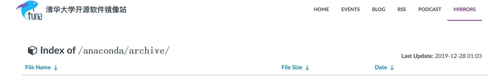
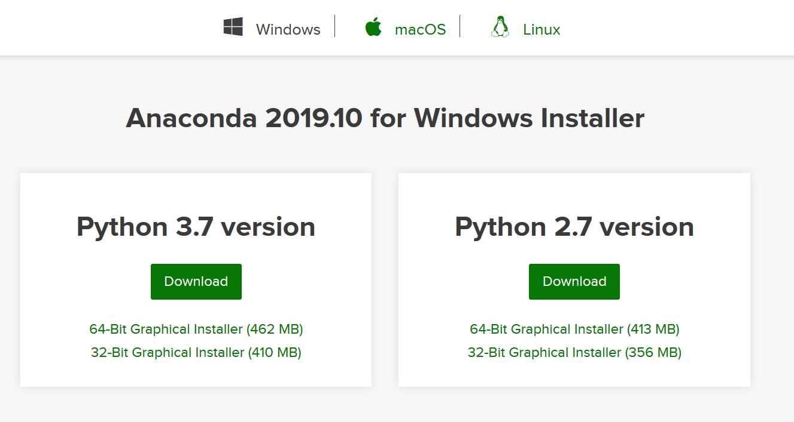
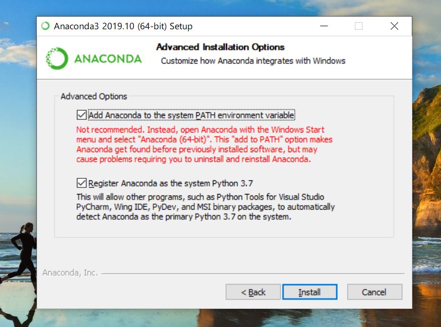
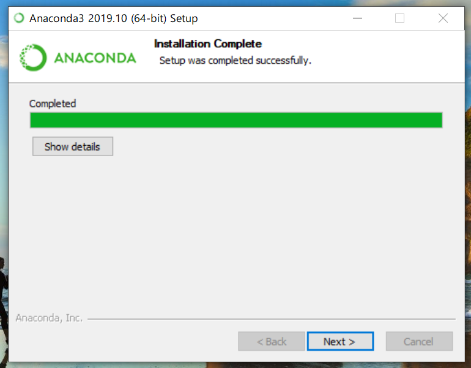
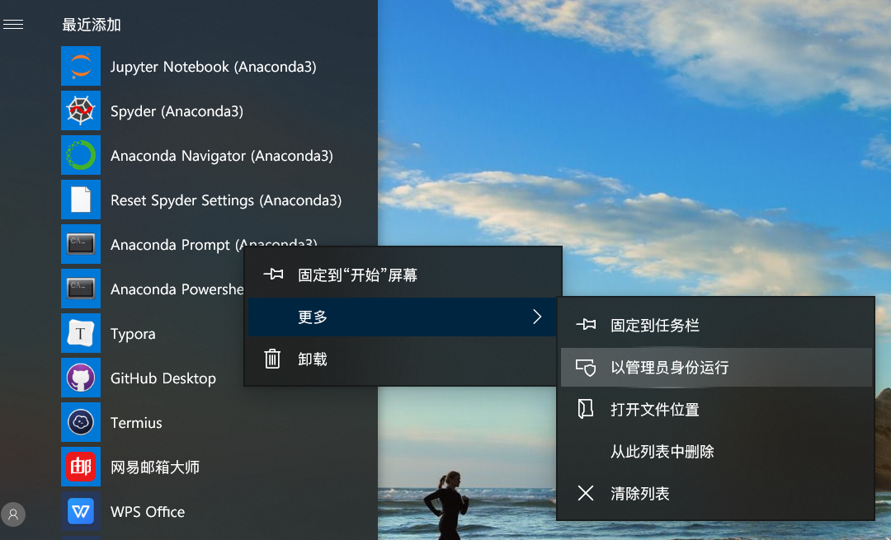
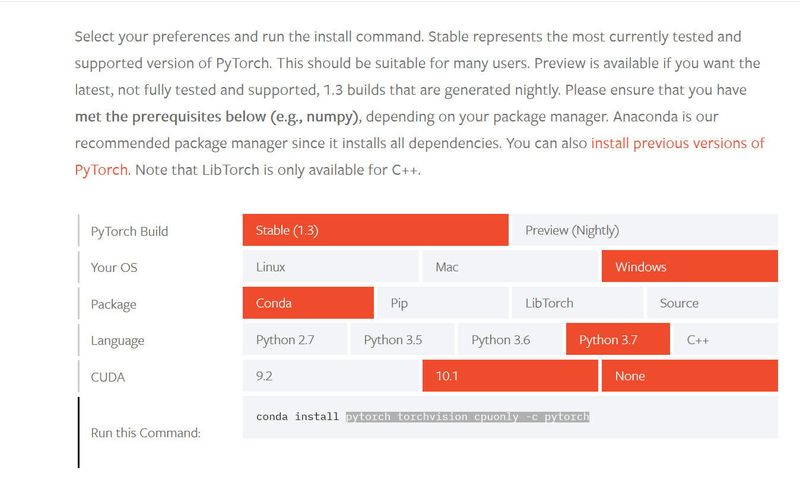
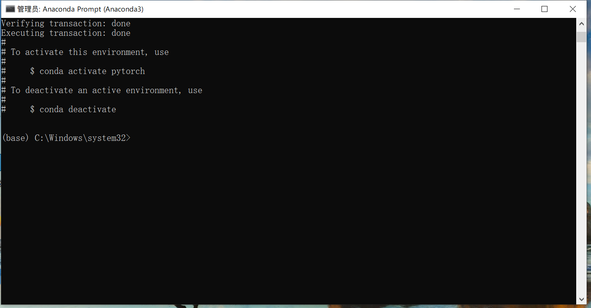
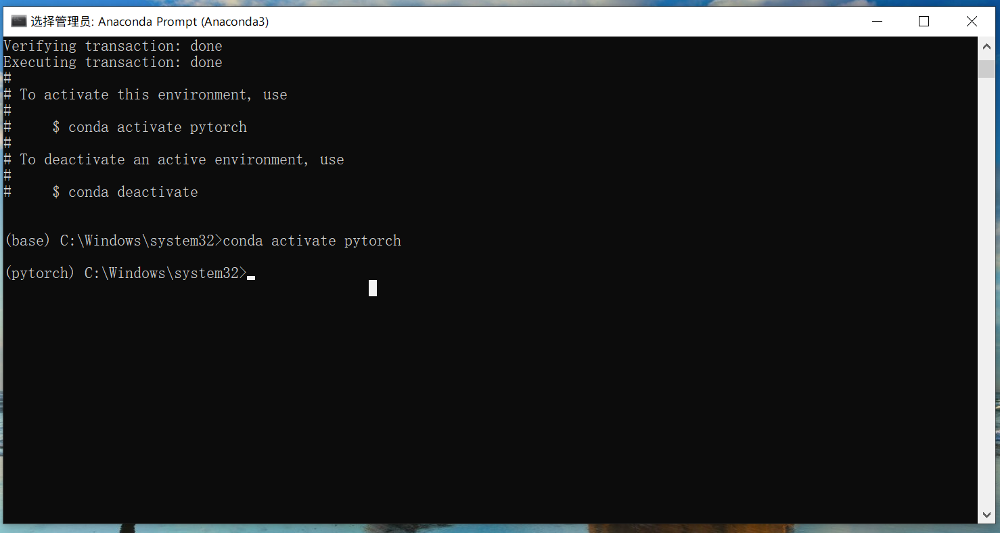
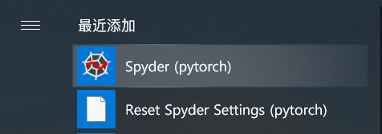

PyTorch实战（二）｜Anaconda3安装Pytorch
话不多说，先上教程。
1.下载Anadoda3安装包
可以选择清华镜像源
https://mirrors.tuna.tsinghua.edu.cn/anaconda/archive/Anaconda3-2019.10-Windows-x86_64.exe

有条件的可以选择官网下载
https://repo.anaconda.com/archive/Anaconda3-2019.10-Windows-x86_64.exe

2.双击安装
注意：安装时可以选择将Anaconda注册为默认的Python环境

然后一路next就可以了
安装完成！

接下来到了很重要的环节————
3.创建conda虚拟环境
为什么要创建虚拟环境呢？
Anaconda主要是对python中的各个包进行管理与部署，从而方便用户的使用体验。
在从github上面下载别人的代码之后，不同的代码往往需要特定的运行环境。比如说有些代码需要在python3.6的环境下运行，有些代码需要在python2.7的环境下运行。
这个时候，就需要conda出马了
选择Anaconda Prompt (Anaconda3)以管理员身份运行

输入命令：
conda create -n environment_name python=3 numpy pytorch torchvision cpuonly -c pytorch
注意：以上命令是安装CPU版本的Pytorch
如需安装GPU版本的Pytorch可以去官网查看对应命令
https://pytorch.org/get-started/locally/

然后一路敲y直到安装完成

接下来需要切换到刚刚创建好的虚拟环境
输入命令：
conda activate pytorch

安装 librosa 音频处理库
conda install -c conda-forge librosa
4.最后一步：安装Spyder IDE
输入命令：
conda install spyder
没有问题的话输入命令：
spyder
会自动打开spyder4窗口
如果出现
1 | (pytorch) C:\Windows\system32>spyder |
说明没有安装 pyqt
输入命令
conda install pyqt
即可
至此，pytorch安装完成，你又可以愉快的机器学习了
安装完成后，你会发现开始栏多了一个Spyder，从此，可以直接从这里打开你刚刚创建的虚拟环境对应的Spyder~
